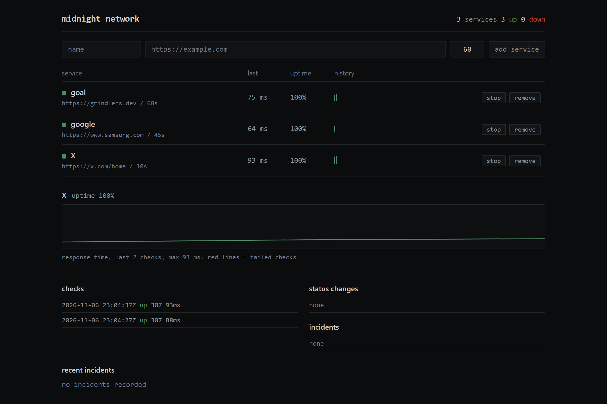
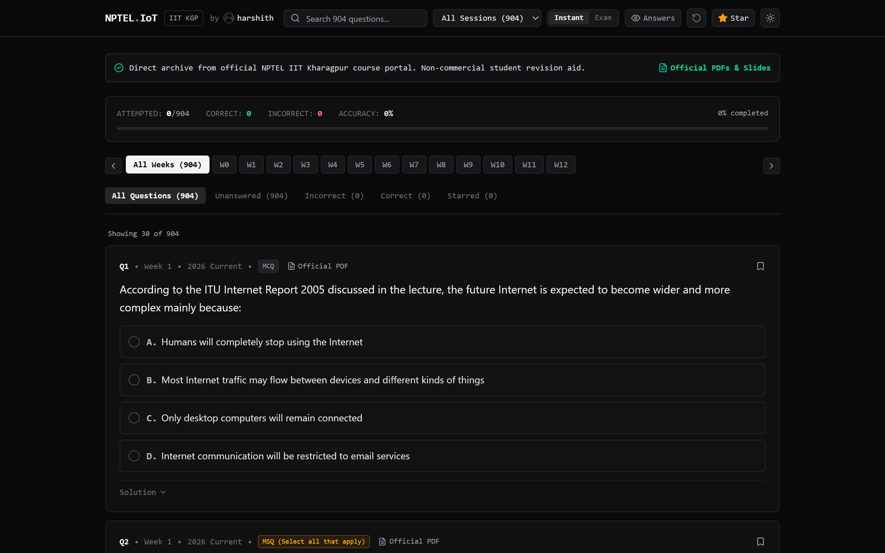

01 // Interview Practice
GrindLens
A coding interview practice tool that tracks practiced algorithmic patterns, highlights blindspots, and schedules revision. Features 3,392 questions across 429 companies.
ENGINEERING DIRECTORY 9 VERIFIED BUILDS
A complete catalog of systems tools, low-latency applications, algorithmic prep engines, and open source contributions by Harshith Padakanti.
A coding interview practice tool that tracks practiced algorithmic patterns, highlights blindspots, and schedules revision. Features 3,392 questions across 429 companies.

Low-latency chat app with zero persistence. Messages exist only in server memory while rooms are open, discarded instantly on session end.

Automated scraper bot publishing daily accepted LeetCode submissions to Discord at 10:15 PM IST via cron-job.org and GitHub Actions.
CLI network-forensics workbench collecting DNS, ping, TCP handshake, and traceroute evidence into reproducible Markdown case files.

Autonomous HTTP service monitoring engine storing checks in SQLite, tracking uptime metrics and managing service incident life-cycles.

Assignment-practice dashboard for NPTEL Introduction to IoT, featuring immediate answer verification and original assignment PDF reference.
High-performance console follower graph in pure C with adjacency lists, mutual follow discovery, and file I/O persistence.
The DBMS project that preceded GrindLens: Python submission sync scrapers, relational MySQL views, PHP APIs, and vanilla frontend.
Open source contributions to Rocket.Chat message-parser engine consolidated into maintainer PR #39853 for NSoC 2026.